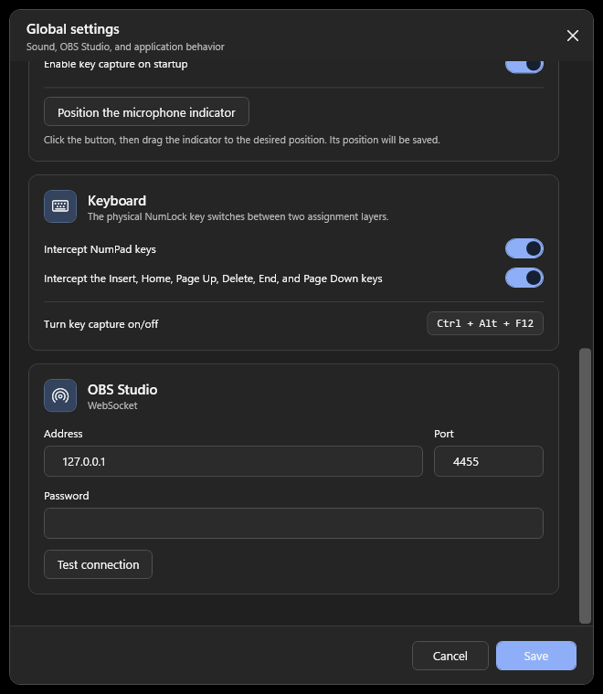
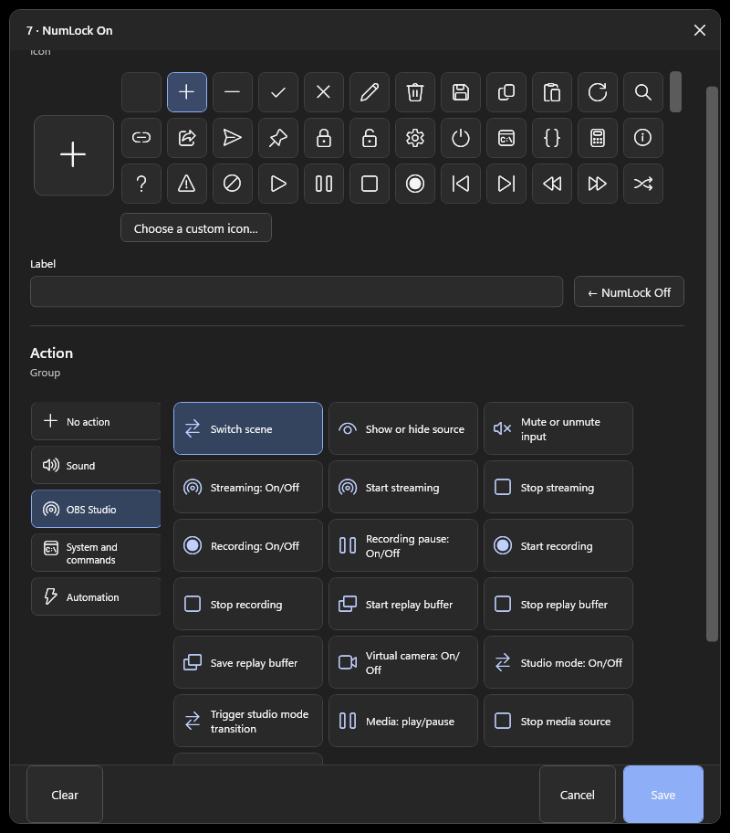

I started looking for a better way to control OBS after realizing that the difficult part was not setting up a stream. It was operating the stream while a game had focus.
Actions such as changing scenes, muting the microphone, or saving a replay are easy inside OBS. During gameplay, however, opening OBS or remembering another combination of keys is distracting. A physical button that performs one clear action is much easier to use by touch.
The short answer: yes, a numpad can control OBS
OBS Studio can react to keyboard shortcuts even when its window is not active. That means numpad keys can be assigned to streaming actions. The best method depends on how many controls you need and whether the keys must remain available to other applications.
Start with three low-risk actions: switch to a gameplay scene, mute or unmute the microphone, and save the replay buffer. Add start/stop streaming only after the layout feels familiar.
Three ways to turn a numpad into an OBS controller
Method 1: assign numpad keys directly in OBS
This is the simplest option and requires no additional software.
- Open OBS Studio → Settings → Hotkeys.
- Find the scene, source, recording, or replay action you want.
- Click its shortcut field and press a numpad key.
- Apply the settings and test the shortcut while another window is active.
The official OBS keyboard shortcut guide covers the shortcuts used inside the main interface. The Hotkeys page in Settings also exposes actions belonging to your own scenes and sources.
Advantages: built into OBS, quick to configure, and sufficient for a small number of actions.
Limitations: shortcuts are tied to OBS, Num Lock can change the meaning of numpad keys, and the same key may still be needed by a game or another application. Labels and profiles also have to be remembered rather than displayed.
Method 2: use a general key-remapping or macro tool
A remapping tool can translate a numpad key into an uncommon shortcut, which OBS then receives as a hotkey. This is useful when a game and OBS compete for the same physical key.
It is also the most flexible DIY route. A separate USB numpad can sometimes be treated independently from the main keyboard, depending on the tool and input method.
The cost is additional setup. You have to maintain both the remapping configuration and the OBS hotkeys. More advanced sequences may require scripts, and it is easy to forget which physical key produces which virtual shortcut.
Method 3: use a numpad control application
A dedicated controller sits between the physical keyboard and OBS. Instead of translating every key into another shortcut, it can connect to OBS through WebSocket and request a specific action by name.
This makes it possible to select a scene or source from a list, display assignments on screen, and combine OBS controls with Windows audio or other local actions.
The rest of this guide uses StreamNumDeck, the Windows application I built for this workflow. It is not an official OBS product. The same general setup applies to other controllers that use OBS WebSocket.
Step-by-step: connect a numpad controller to OBS
1. Check OBS WebSocket
Current OBS Studio releases include obs-websocket. In OBS, open Tools → WebSocket Server Settings, enable the server, and keep authentication enabled.
The default port for obs-websocket 5.x is 4455. Copy the generated password rather than replacing it with something easy to guess. The official obs-websocket documentation also recommends password protection.
2. Enter the connection details
Open StreamNumDeck settings and enter:
- Address:
127.0.0.1when OBS is running on the same computer. - Port:
4455, unless you changed it in OBS. - Password: the password shown in OBS WebSocket settings.

Use Test connection before saving. A connection test should only verify access and load available scenes and sources; it should not start a stream or recording.
3. Assign one action to one key
Choose a physical key in the on-screen numpad. For the first test, select OBS Studio → Switch scene and choose an existing gameplay scene.

Keep the first layout simple. A practical starting row might be:
- Numpad 1: gameplay scene
- Numpad 2: intermission scene
- Numpad 3: full camera scene
- Numpad 0: microphone mute
- Numpad Decimal: save replay buffer
Test every assignment with OBS running and the game window focused. Do this before a live broadcast.
Use Num Lock as a second layer
A single numpad has enough keys for a basic stream. Num Lock can double the available assignments by selecting between two independent layouts.
For example:
Switch to gameplay
Mute the microphone
StreamNumDeck combines 22 physical controls — the numpad plus six navigation keys — with these two layers, allowing up to 44 assignments in each profile.
Do not fill all 44 positions immediately. A smaller layout is easier to remember, and unused keys reduce accidental actions.
Common problems
The numpad types numbers instead of triggering an action
Check that key capture is enabled and that the correct Num Lock layer is active. If you chose the direct OBS-hotkey method, confirm that the shortcut is still present in OBS Settings.
OBS does not connect
Verify that the WebSocket server is enabled, OBS is running, the port matches, and the password was copied correctly. Use 127.0.0.1 when both applications are on the same Windows computer.
A game still reacts to the same key
Direct OBS hotkeys do not necessarily reserve the physical key for OBS. Use a different key, remap it to an unused combination, or enable interception in a dedicated controller. Some games and anti-cheat systems handle keyboard input differently, so test with each game you stream.
I need the numpad for normal work
Pause capture when the stream is finished. StreamNumDeck reserves Ctrl + Alt + F12 as an emergency capture toggle and can also pause capture from its tray menu.
Windows SmartScreen shows an unknown publisher warning
The current StreamNumDeck installer is not commercially code-signed. Download it only from the official website or GitHub repository, compare the published hash when available, or use the portable ZIP. Never disable Windows security globally just to run one application.
Which method should you choose?
| What you need | Best starting point |
|---|---|
| Two or three simple OBS actions | OBS hotkeys |
| A separate USB numpad or custom scripts | Key-remapping tool |
| Named scenes and sources, visible assignments, or multiple profiles | Dedicated numpad controller |
| A labeled hardware display with plugins and integrations | Physical Stream Deck |
There is no reason to buy more hardware before testing whether a physical numpad fits your workflow. Start with OBS hotkeys. If the limitations become annoying, move to remapping or a dedicated controller.
The important improvement is not the number of available commands. It is being able to trigger the right command by touch without leaving the game.
Ready-made option
Try the workflow on Windows.
StreamNumDeck is available as a regular Setup package and a portable ZIP. It has no advertising or telemetry and is free for permitted personal and other non-commercial use.